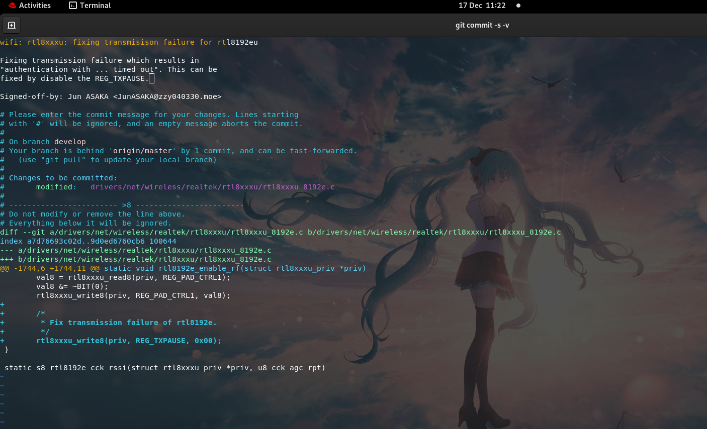
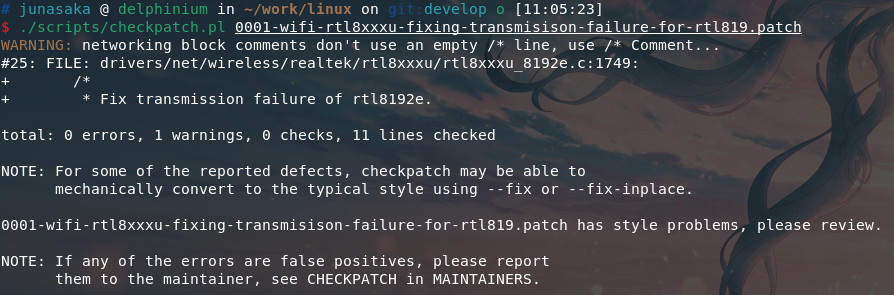
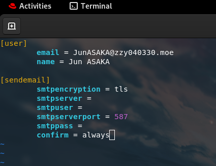
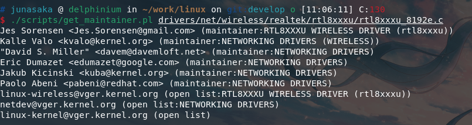
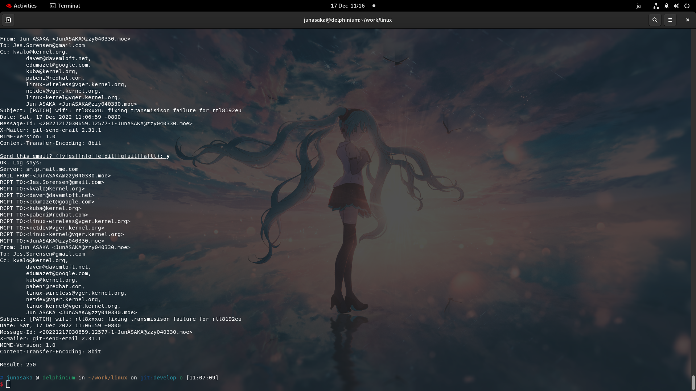
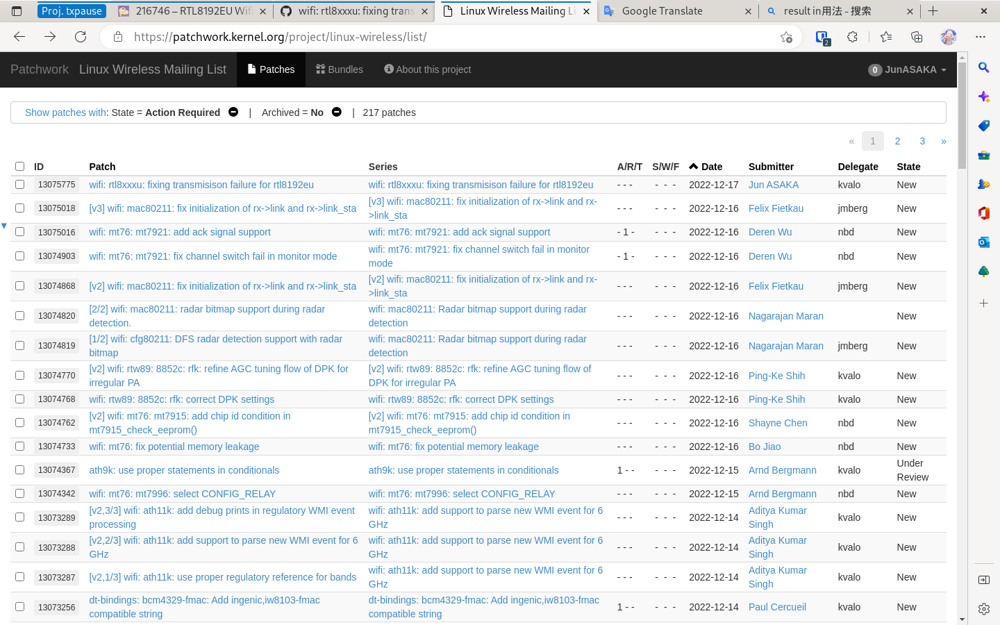
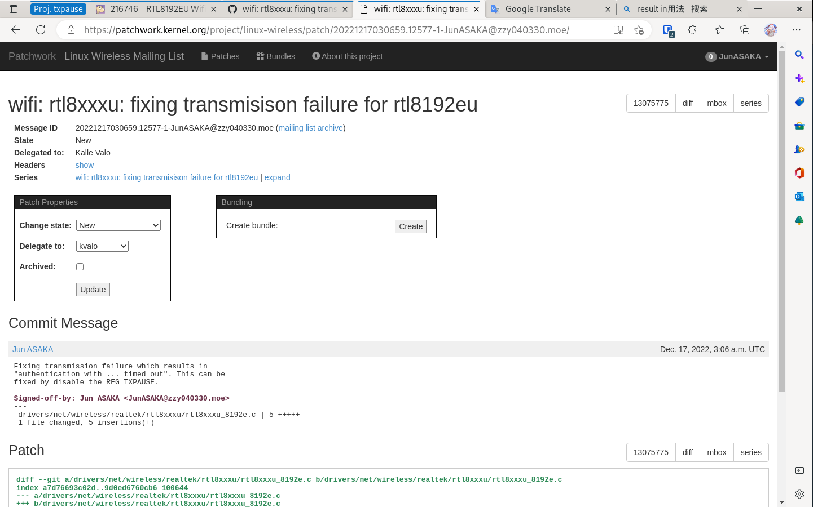
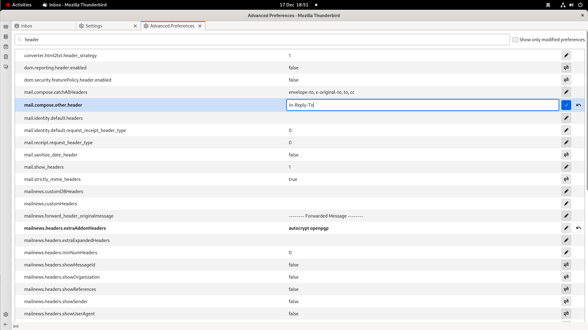
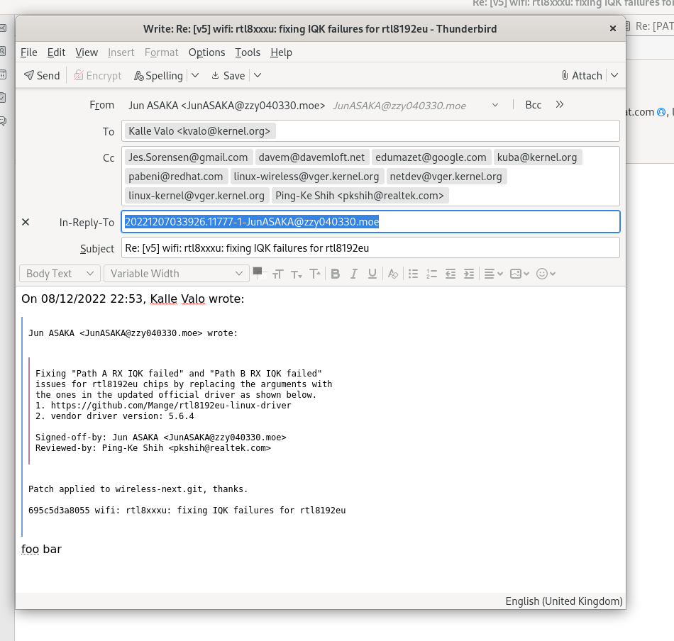
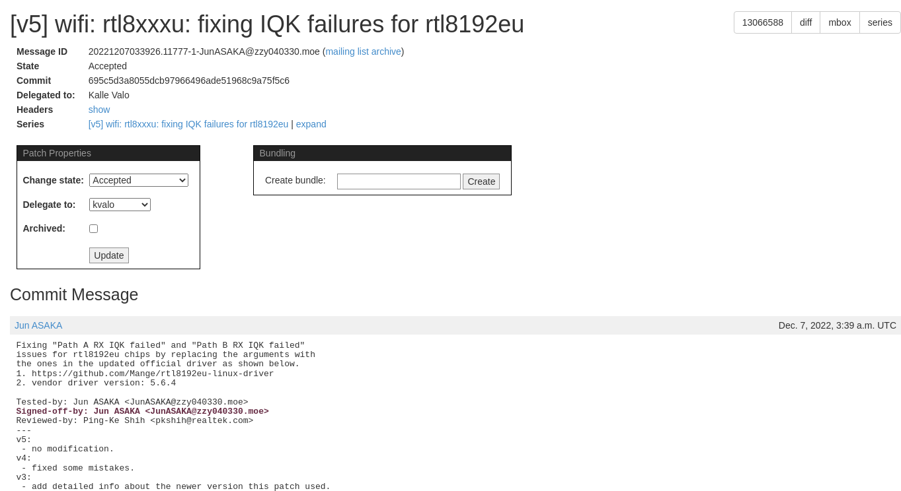

Linux主线代码贡献纪要
～Pathcwork相关系统操作纪要～
一、使用git制作patch
使用git工具从git.kernel.org克隆相关仓库，一般使用中对应模块的next仓库或使用Linux主线仓库。克隆完毕后切换到另一个分支进行源代码修改。
git branch develop
git checkout develop
此处须注意的是，在一个patch内仅解决一个问题。若源码修改包含多个模块、功能等，则需要拆分成多个补丁进行提交（aka. Separate your changes）。即按照「逻辑更改（logical change）」将更改拆分到多个补丁，进行多次提交。例如，一个更改包含错误修复与性能优化，则需要将这个更改制作成两个补丁；若一个更改包含API升级和新API使用，则需要拆成两个补丁。
同时，提交的代码应遵守Linux内核的coding style。
接下来，使用git进行commit并生成patch。
git add foo
git commit -s -v
此时会打开默认的文本编辑器以进行commit message的编辑。正常状态下，可见一行「Signed-off-by」，若git系统配置正确，此处应显示提交者的名字与电子邮件地址。该文件第一行为主题，用一句主语省略的句子描述补丁的功能，e.g. 「make xyzzy do frotz」，若该补丁为修改后的重新提交（见后文），则改、标题行将自动生成，并附有修订号。
主题与正文间空一行，正文描述改更改的具体内容。正文与「落款（即Sign-off等内容，不知其正式称呼如何）」间空一行，「落款」中可以添加其它信息，如「Co-developed-by」、「Tested-by」等；具体细节参照文档。
commit message的格式应遵照The canonical patch format。

若提交信息需要修改，则可使用git reset --soft HEAD^或git reset --hard HEAD^撤销commit，前者仅撤销记录，后者同时恢复工作区文件。若仅修改commit message，则使用git commit --amend -v命令。
之后，使用git format-patch master以对照master分支生成补丁。
二、检查patch并提交
使用./scripts/checkpatch.pl foo.patch检查patch，若有错误或不合规之处，该命令会指出（如图），按照要求修改即可。

接下来配置git系统的email功能。若发行版上没有安装git-email插件，则使用软件包管理器安装。
sudo dnf install git-email
随后，在.gitconfig文件中配置电子邮件地址、邮件的SMTP服务器信息与登录信息。然后可使用git email进行测试。

git email --to foo@example.esc somefile
确保邮件系统正常运作，以便发送patch。
在提交前，需要根据修改的文件来找到对应的维护者；使用仓库中的脚本，以被修改的文件为参数运行。
./scripts/get_maintainer.pl foo/bar.c

将具体的模块维护者作为收件人，其他维护者与mailing list作为抄送人发送patch电子邮件，命令与结果如图。发送者会被git自动添加到抄送列表，故然自己也会收到同一封电子邮件，以便检查其内容。

发送后等待些许时间，即可在patchwork.kernel.org中对应mailing list看到提交的补丁。注意其Message ID，后面的修订工作都要回复至此Message ID。


三、交流与修订
补丁提交之后，维护者会根据具体情况发送电子邮件交流相关事项或指出补丁的问题所在。需要进行电子邮件交流时，需要设置In-Reply-To标头指名Message ID。此处使用Thunderbird邮件客户端，在编辑器设置中添加其它标头，然后回复（Reply All）对应信息，在撰写邮件时，添加Message ID到In-Reply-To标头。邮件主题自动生成，为Re: foo bar，切莫自定义主题；另外注意，回复之正文应写在引用部分的下方，也可以逐段引用以讨论特定问题。发送时以纯文本形式发送，不要使用html排版，亦不要插入附件等内容，邮件中的链接地址会在patchwork系统中自动显示为超链接形态。


若要修改补丁中的某个错误或进行优化，则需要提交下一个修订版。在仓库中使用git format-patch -v2 master #亦-v3、-v4……生成补丁，此前，在commit message末尾应注明每一个修订版的更新内容，标题无需更改，生成的补丁文件会在标题中自动添加修订号前缀。
然后使用git email再次发送新的补丁。
通常来说都要进行多次修订。若该补丁通过模块维护者的审核，则维护者会在commit message中添加「Reviewed-by」信息，说明已经通过代码审查。接下来等待代码合并的窗口期，会先合并入对应模块的next仓库，然后合入主线仓库；期间「似乎会」进行自动审核，合并后维护者会回复Email说明情况并更新补丁的state为Accepted。

Jun ASAKA
二〇二二年冬月廿四 土曜日